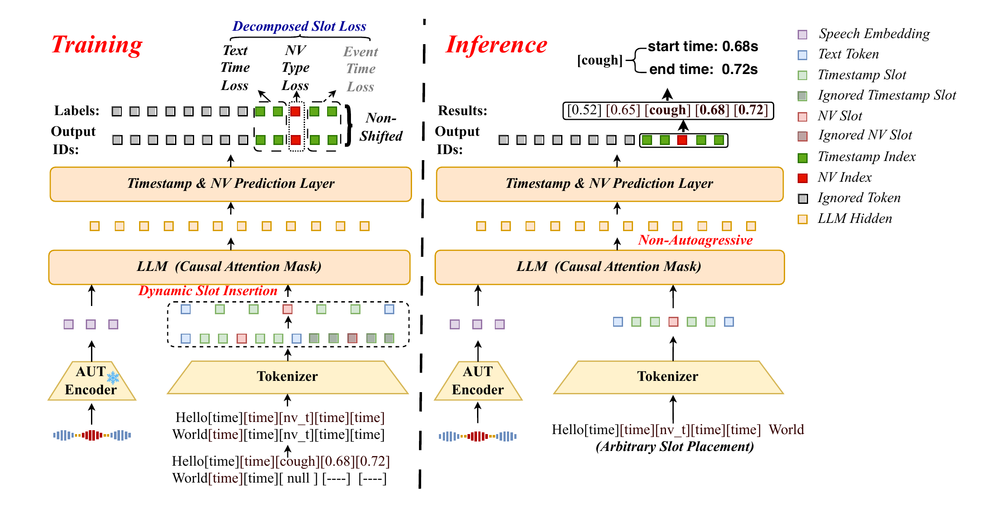

Loading samples…
Human speech includes nonverbal vocalizations (NVVs), such as laughter, sighs, breaths, and coughs, which convey affective and interactional information. Existing approaches typically represent NVVs as transcript-level tags, providing limited supervision for their waveform-time boundaries. We present NVV-Locator for fine-grained NVV temporal grounding. We first unify 26 NVV categories across public resources and construct large-scale timestamp-supervised training data through dual-LLM verification, transcript-guided forced alignment, and energy-based boundary refinement. We further introduce NVV-TimeBench, an expert-refined benchmark with 667 utterances and 1,094 events. NVV-Locator uses a non-autoregressive slot-filling architecture to jointly predict lexical timestamps, NVV categories, and event boundaries. On NVV-TimeBench, it achieves 71.0% Micro F1, 70.2% Macro F1, 80.4% Macro mIoU, and 59.6 ms Macro mMAE, outperforming the evaluated large audio model counterparts. Evaluation on an external corpus further demonstrates the cross-corpus generalization of NVV-Locator.

26 NVV event types, IoU ≥ 0.5. Each case: NV-Locator correctly localizes the target; all four commercial audio LLMs miss the target interval.
Loading samples…